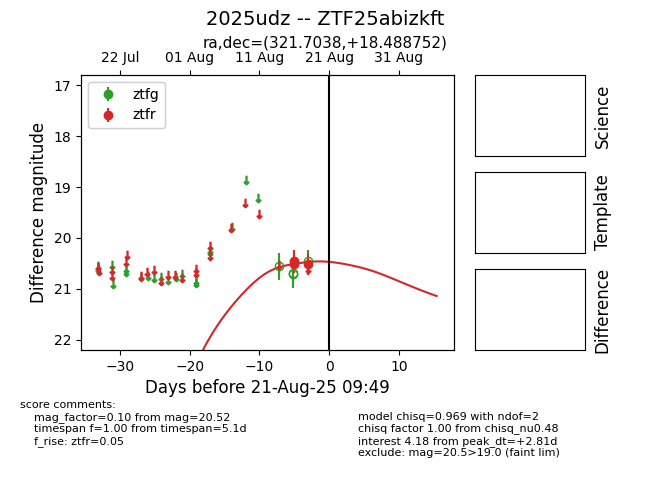

Target 2025udz at 2025-08-21 09:49, see:
FINK: fink-portal.org/ZTF25abizkft
Lasair: lasair-ztf.lsst.ac.uk/objects/ZTF25abizkft
ALeRCE: alerce.online/object/ZTF25abizkft
TNS: wis-tns.org/object/2025udz
YSE: ziggy.ucolick.org/yse/transient_detail/2025udz
alt names
ZTF25abizkft (ztf,alerce)
2025udz (tns,yse)
coordinates:
equatorial (ra, dec) = (321.7038,+18.48875)
galactic (l, b) = (69.7758,-22.63092)
photometry
last ztfr=20.52
3 ztfr detections
